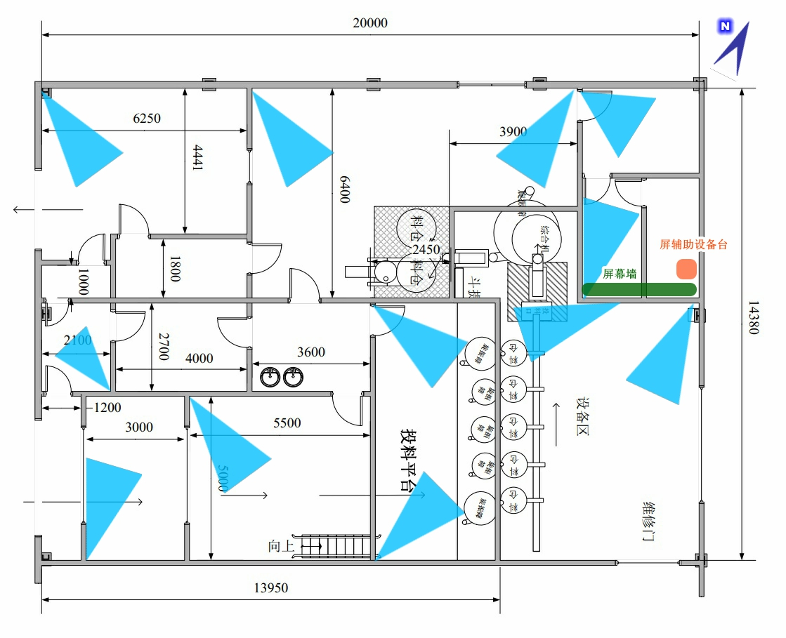
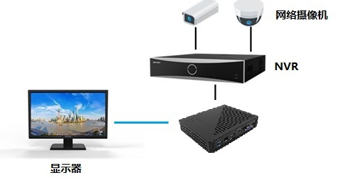
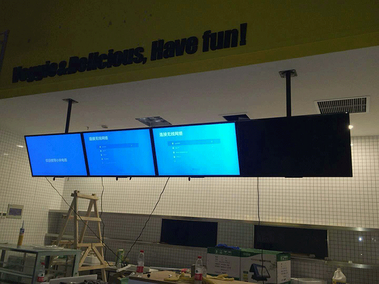
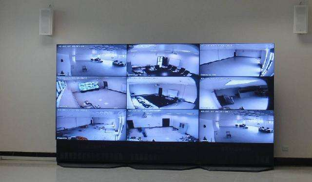
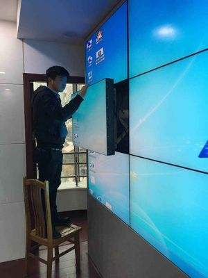
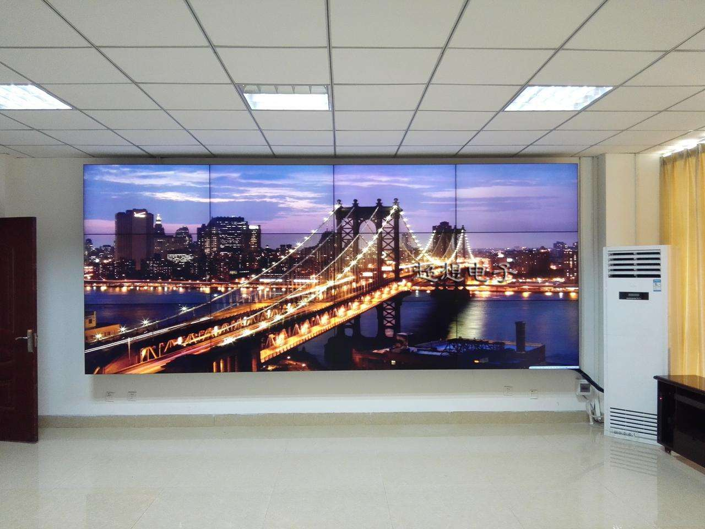
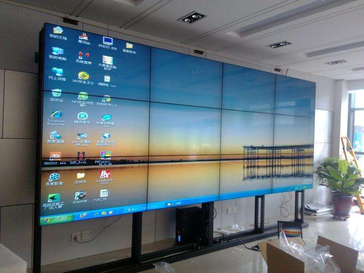
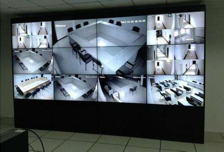
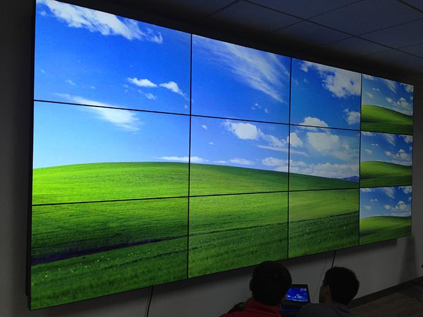

复配膨松剂车间是按照国家食品生产安全的现有标准来设计和建造的车间。车间的生产工艺，流程控制已成为现在重点考虑的对象。因此实时监控，及时发现生产过程中出现的对食品质量安全造成影响的问题以及及时解决问题，已成为现场质量检验的重点。
受公司领导委托，现出具复配膨松剂车间监控系统设计方案：
● 实时现场监控点位12位置（如下图）
● 其中2点位要求记录储存183天以上（重点，见左侧导航）
● 复配膨松剂车间大屏实时显示每点位实时视频，视距要求各点位3米内清晰可见。（重点，见左侧导航）
● 监控点线路整洁，不露线，线管不贴墙。
规划图
● 其中2点位要求记录储存183天以上
因厂区原有监控系统所有点位存储时间全部为7~12天，如贸然接入需要存储183天录像时间以上的监控点，则系统容易出现问题，主要原因是： 1.设置系统锁住存储空间以后，如有监控点出现问题，会导致锁住的空间变动，造成混乱。 2.很容易误操作。 3.硬盘磨损加剧。
故推荐增加一台录像机解决此问题。新增的录像机专用于应对超长期录像时间保存。专机专用能更稳定地运行。
因此项而增加的费用为900元。
● 复配膨松剂车间大屏实时显示每点位实时视频，视距要求各点位3米内清晰可见。
要求远距离辨识屏幕上显示的各监控现场，必须组显示幕墙。
以下数种方案提供参考：（每个方案总价为独立价格） 1.经济的2种方案
最经济：并排摆放3台55寸普通显示器。每台显示器配置一台高清解码器同时解析4画面。
示意图
| 设备名 | 选型 | 单价 | 数量 | 金额 |
|---|---|---|---|---|
| 显示器 | 纯平55寸液晶显示器 | 3300 | 3 | 9900 |
| 网络信号解码器 | 海康威视专业数字信号解码器 | 900 | 3 | 2700 |
| 安装挂架 | 前维护液压支撑屏幕挂架 | 600 | 3 | 1800 |
| 视频信号延长线 | 数字转HDMI延长线/6米 | 50 | 3 | 150 |
| 千兆交换机 | 8口千兆监控汇聚交换机 | 260 | 1 | 260 |
| 此项总价 | 14810 |
或
挂12台42寸普通显示器。将显示器按3*4矩阵摆放，每台显示器配置一台数字解码器显示单画面。
示意图
| 设备名 | 选型 | 单价 | 数量 | 金额 |
|---|---|---|---|---|
| 显示器 | 纯平55寸液晶显示器 | 3300 | 12 | 39600 |
| 网络信号解码器 | 海康威视专业数字信号解码器 | 900 | 12 | 10800 |
| 安装挂架 | 前维护液压支撑屏幕挂架 | 600 | 12 | 7200 |
| 视频信号延长线 | 数字转HDMI延长线/6米 | 50 | 12 | 600 |
| 千兆交换机 | 8口千兆监控汇聚交换机 | 460 | 1 | 460 |
| 此项总价 | 58660 |
2.专业的方案
使用专业矩阵屏幕，12台46吋矩阵显示器使用专用支架安装，用矩阵解码器同时控制12显示器显示12监控画面，使用电脑控制矩阵解码器。此方案属于定制工艺，有以下优势：
屏幕拼接仅微缝（间距3.5mm）几乎不可见。
定制支架，钢材质，主架支撑，附架维护，带液晶伸缩杆。
支架示意图
单位屏清晰度1080P亮度500cd/m2，（普通显示屏350cd/m2）屏幕高宽比16:9。
可任意分割，拼合屏幕，如4屏幕显示1画面，8屏显示1画面，画中画。甚至12屏幕1画面，达到超大屏的震撼效果。
使用电脑的专业监控控制软件，一个鼠标控制全部画面，可即时回放，同步回放。切换输入更方便。
示意图
   | 设备名称 | 选型及配置 | 品牌型号 | 单位 | 数量 | 单价 | 金额 |
|---|---|---|---|---|---|---|
| 46寸液晶拼接单元 | 物理拼接屏缝宽度:3.5mm 清晰度:1080p 分辨率:1920X1080 亮度:500cd/m2 对比度:3000:1 屏幕高宽比16:9 矩阵组合方式:4行X3列 | HC55-BJP | 台 | 12 | 3600 | 43200 |
| 矩阵处理器 | 完美的嵌入式结构设计 支持365天24小时不间断工作 具有信号加强功能 色彩无偏差，温控风扇低音降噪 系统运行环境：操作系统Windows2000/XP/WIN7/Vista 输入类型：2路BNC，1路VGA输入,1路HDMI输入;1路DVI输入 串口类型：标准RS232通讯接口或其兼容型号， |
HC55-N | 套 | 12 | 3200 | 38400 |
| 解码矩阵 | 高清解码矩阵12位解码板 | HCs2 | 台 | 1 | 12400 | 12400 |
| 定制壁挂 | 定制支架，铝合金材质 | 联昊 | 单元 | 12 | 320 | 3840 |
| 控制软件 | 专业拼接控制软件 | 京东方 | 套 | 1 | 6000 | 6000 |
| 配套线缆 | 集成全套线材 | 绿联 | 套 | 12 | 200 | 2400 |
| 串口线 | USB转九针串口线 | 绿联 | 条 | 1 | 200 | 200 |
| 包装运输费 | 含打木架，含运费 | -- | 批 | 1 | 2400 | 2400 |
| 技术服务费 | 安装调试费 | -- | 次 | 1 | 6000 | 6000 |
| 此项总价： | RMB | 114840 |
● 综合推荐方案
因超大屏方案预算金额相差较大，必须由公司领导决定。因此，推荐方案预算未包含超大屏预算。预算中仅含本期（第四期）纯监控系统工程预算。
| 设备名 | 选型 | 数量 | 单价 | 金额 |
|---|---|---|---|---|
| 中心存储服务器 | 海康威视4路录像机H.265编码 | 1 | 800 | 800 |
| 中心存储服务器 | 海康威视32路录像机H.265编码 | 1 | 1300 | 1300 |
| 监控头 | 海康威视400万像素摄像头H.265编码 | 12 | 430 | 5160 |
| 网线 | TCL原装网线 | 3 | 760 | 2280 |
| 水晶头 | AMP超五类水晶头 | 100 | 1.6 | 160 |
| 千兆交换机 | POE交换机 | 6 | 330 | 1980 |
| 硬盘 | 西数4T监控级 | 3 | 1050 | 3150 |
| 显示器 | 飞利浦21.5寸 | 2 | 820 | 1640 |
| 支架 | 海康威视原装支架 | 12 | 35 | 420 |
| 电源 | 12V2A防雨监控电源 | 12 | 18 | 216 |
| 防雷光转换器 | 千兆多光纤转换器 | 2 | 260 | 520 |
| 铜电源线 | 两芯铜电源线2.5mm | 400 | 3 | 1200 |
| PVC管 | 20# | 100 | 3 | 300 |
| 插座 | 10孔插座 | 6 | 30 | 180 |
| 室内外配电箱 | 防水 | 6 | 80 | 480 |
| 线钳 | -- | 1 | 60 | 60 |
| 此项总价 | 19846 |